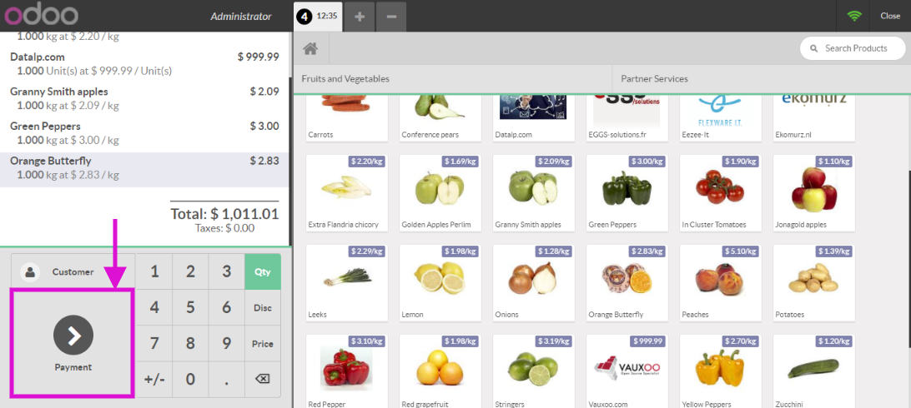
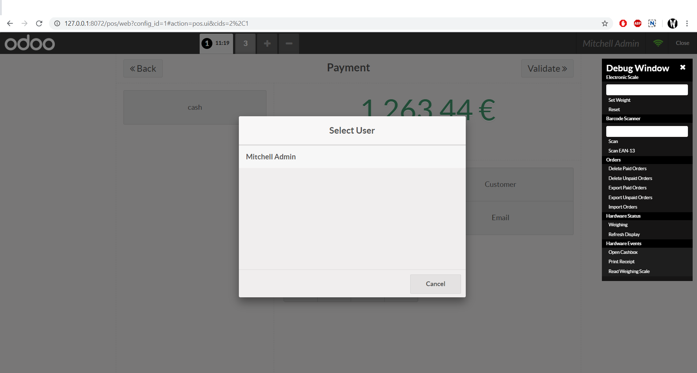

The module forces to select a cashier before switching to payment screen. Once user clicks on "Payment", custom popup is shown and user can select a cashier by scanning cashier's barcode or by choosing one from the list.


Contact us by email